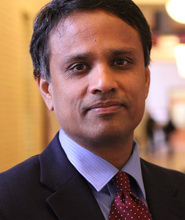

Keynote Speakers

Hsinchun ChenArizona Regents’ Professor |
Bio: Dr. Hsinchun Chen is University of Arizona Regents’ Professor and Thomas R. Brown Chair in Management and Technology in the Management Information Systems (MIS) Department and Professor of Entrepreneurship & Innovation in the McGuire Center for Entrepreneurship at the College of Management of the University of Arizona. He received the B.S. degree from the National Chiao-Tung University in Taiwan, the MBA degree from SUNY Buffalo, and the Ph.D. degree in Information Systems from the New York University. Dr. Chen is director of the Artificial Intelligence Lab and has served as a faculty of the UA MIS department (ranked #3 in MIS) since 1989. He had served as a Scientific Counselor/Advisor of the National Library of Medicine (USA), Academia Sinica (Taiwan), and National Library of China (China).
Title: “Health Big Data and Analytics: Clinical Decision Support and Patient Empowerment”
Abstract: In this talk I will discuss the research opportunities in health big data analytics. Based on research partnership in Asia, I will present our ongoing research in disease progression modeling using Electronic Health Record (EHR) and adverse drug event extraction using patient social media. A working prototype system DiabeticLink which aims to support healthcare decision making and patient empowerment for diabetes patients will be introduced. Research partnership in Asia for health analytics research is sought. I will also introduce the NSF Smart and Connected Health (SCH) research program, which I will lead in August 2014.
 Ramayya KrishnanDean of Heinz College |
Bio: Ramayya Krishnan holds the John Heinz III Dean’s Chair and is the W.W. Cooper and Ruth F. Cooper Professor of Management Science and Information Systems at the H. John Heinz III College at Carnegie Mellon University. The College is home to CMU’s School of Information Systems and Management and to its School of Public Policy and Management. He completed his studies in Engineering, Information Systems and Operations Research at the Indian Institute of Technology (Madras) and the University of Texas at Austin. His current areas of research interest are in large scale network analysis and in the development of methods that balance confidentiality and data access. He works on data intensive problems that arise in a variety of business and application domains.
Title: “Accelerating Digitization: Opportunities for Innovation”
Abstract: The pace of change and digitization-led transformations enabled by Information technology (IT) in important societal and business domains is accelerating. This has led to significant innovation resulting in the creation of new services and business models (e.g., the latest example being the Ubers and Airbnb’s of the sharing economy) and in the highly visible role for IT in major societal initiatives such as the rollout of the Affordable Care Act. Vulnerabilities associated with this digitization have also been recently in the news – from the contentious discussions about surveillance to the widely reported security breaches at companies such as Target. Hand in hand with these developments has been the emergence of data science or big data as a field in its own right taking advantage of two unique capabilities enabled by information technology-based platforms. The first pertains to opportunities to instrument collection and analysis of either large amounts of fine grained data or highly contextualized data about phenomena of interest (e.g., about people and their behaviors). The second is the capacity to conduct near real time, closed loop experiments at the scale required by the analysis to draw causal inferences. As evidenced by the considerable interest shown by Private and Government Research Foundations (Sloan, Moore, NSF, NIH and DOT), there are a number of interesting opportunities for innovation using a research, development and deployment metaphor I have introduced in prior addresses. In this talk, I will highlight using business and societal examples some of the important research and innovation opportunities that lie at the intersection of data science, social science and computing.
Panel 1: Opportunities for Research Collaborations in China
| Name | Affiliation |
|---|---|
| Guoqing Chen | Tsinghua University |
| Hsinchun Chen | University of Arizona |
| Jeffrey Hu (Moderator) | Georgia Institute of Technology |
| Yongkai Ma | University of Electronic Science and Technology of China |
| Qiang Ye | Harbin Institute of Technology |
| Leon Zhao | City University of Hong Kong |
| Wei Zhang | Tianjin University |
Panel 2: Future of Digital Innovation and Transformation
| Name | Affiliation |
|---|---|
| Ravi Bapna | University of Minnesota |
| Ramnath Chellappa | Emory University |
| Prabuddha De (Moderator) | Purdue University |
| Anindya Ghose | New York University |
| Ramayya Krishnan | Carnegie Mellon University |
| Giri Kumar Tayi | University at Albany-SUNY |